name: lookatthedata class: center,middle, .toc[[✧](../index.html)] .title[Look at the Data] --- name: overview class: left, .toc[[✧](../index.html)] # Importance of Methods The methods used to analyze time series are an essential factor in determining how much information can be extracted. But... • Not all methods yield useful results for any particular dataset. • It can take a lot of time and effort to learn a new method to the point of proficiency. • Creative use of low-tech methods can often be more fruitful than learning a new, supposedly sophisticated method. • The importance of ancillary data—that is, “adjacent” datasets that provide support and background— should not be overlooked. • There is a limit to the amount of information that can be extracted from a given dataset. It is important not to take that personally. • Our *attitudes* can matter as much as our *methods*. --- class: left, .toc[[✧](../index.html)] # Look at the Data The first phase of analyzing a time series is to get to know it. This is done just by using your eyes. ***Looking at the data* is the single most important part of time series analysis.** Remarkably, many people skip over this step, and proceed straight to computing EOFs or spectra or whatever. That's like starting to cook without even looking at your ingredients. It's unlikely to turn out well. The goal of looking is to start to understand what kind of information might be, and might not be, present within the data. In other words, you'd like to know what the data is “trying” to say. --- class: left, .toc[[✧](../index.html)] # Some Guidelines Analyzing data is about being an *observationalist*. This means freeing your mind from preconceptions and being able to notice what is actually present. The observational scientist is the person who *speaks for* the data. This an an *impersonal* activity, unrelated to your wishes and goals. Use your imagination. You are putting together a puzzle with only 10% of the pieces. What does the whole puzzle look like? The data can *support* a hypothesis much larger than the data themselves. It is important to assess limitations realistically. Be honest! The observational scientist's job includes being able to recongize when something is not clear or not supported. --- class: left, .toc[[✧](../index.html)] # Looking at the Data The first thing we will do is to practice looking at data. Try to note as many *observable features* as you can before moving on to the next slide. Ask yourself what you can know, and not know, just by seeing. You are not told what the data is. You are also not provided with important information, like units. A grey box denotes a region that will be zoomed in on the next slide. After you have noted as many features as you can, see if you can guess what the data might be. --- class: center, .toc[[✧](../index.html)] #First Example 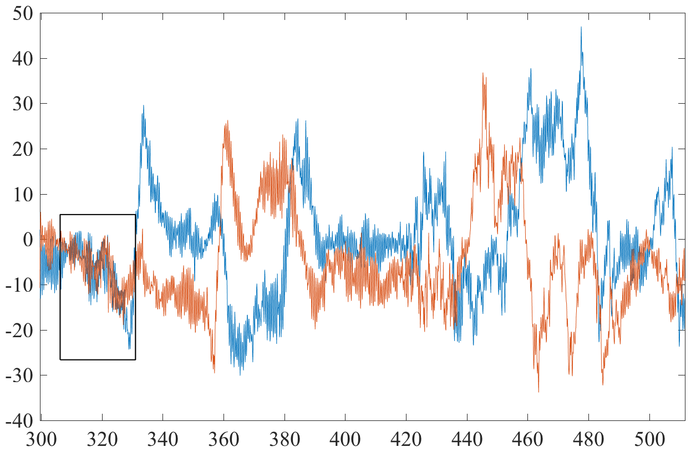 --- class: center, .toc[[✧](../index.html)] #First Example 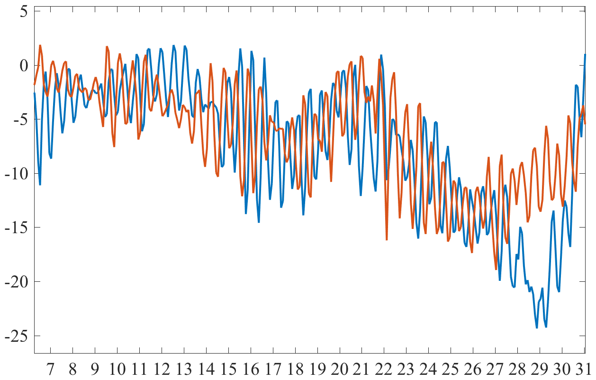 --- class: left, .toc[[✧](../index.html)] #Observable Features 1. The data consists of two time series that are similar in character. 1. Both time series present a superposition of scales. 1. At the smallest scale, there is an apparently oscillatory roughness which changes its amplitude in time. 1. A larger scale presents itself either as localized features, or as wavelike in nature. 1. Several sudden transitions are associated with isolated events. 1. Zooming in, we see the small-scale oscillatory behavior is sometimes `$90^\circ$` degrees out of phase, and sometimes `$180^\circ$`. 1. The amplitude of this oscillatory variability changes with time. The fact that the oscillatory behavior is not consistently `$90^\circ$` out of phase removes the possibility of these features being purely inertial oscillations. The amplitude modulation suggests tidal beating. -- This is current meter data from the Labrador Sea. The isolated events are eddies, which cause the currents to suddenly rotate as they pass by. The oscillations are due to tides and internal waves. --- class: center, .toc[[✧](../index.html)] #Second Example 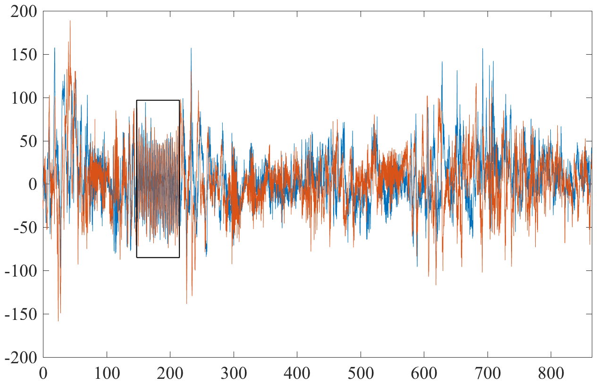 --- class: center, .toc[[✧](../index.html)] #Second Example 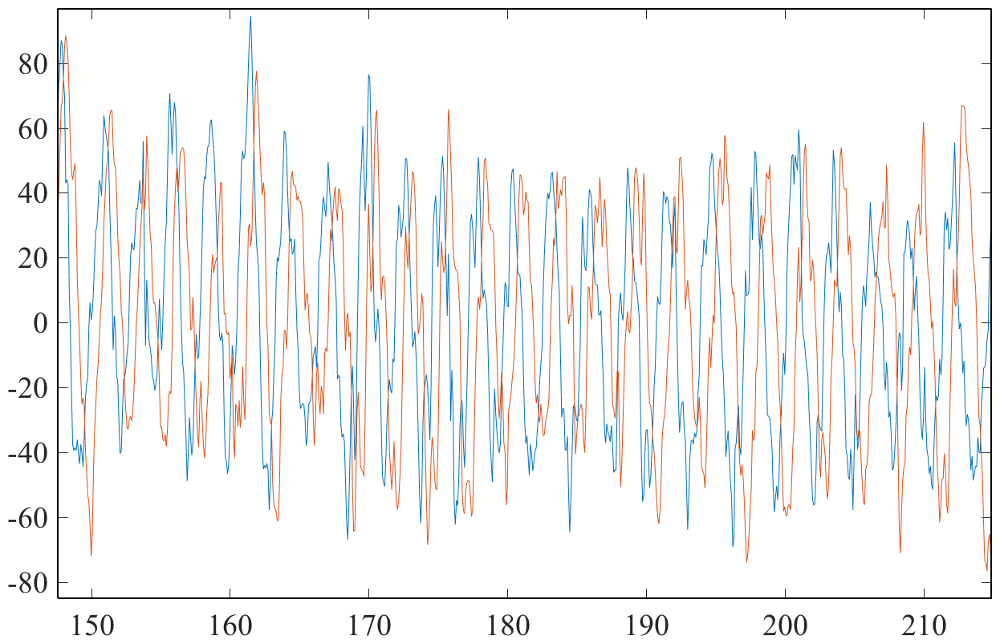 --- class: center, .toc[[✧](../index.html)] #Second Example 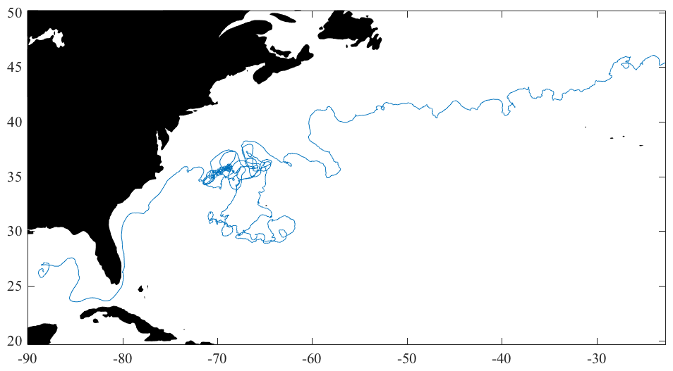 --- class: left, .toc[[✧](../index.html)] #Observable Features 1. The data consists of two time series that are similar in character. 1. Both time series present a superposition of scales and a high degree of roughness. 1. The data seems to consist of different time periods with distinct statistical characteristics—the data is *nonstationary*. 1. Zooming in to one particular period show regular oscillations of roughly uniform amplitude and frequency. 1. The phasing of these show a circular polarization orbited in a counterclockwise direction. 1. The zoomed-in plot shows a fair amount of what appears to be measurement noise superimposed on the oscillatory signal. -- This is a surface drifter record. The oscillatory portion is due to trapping in a cyclonic eddy. --- class: center, .toc[[✧](../index.html)] #Third Example 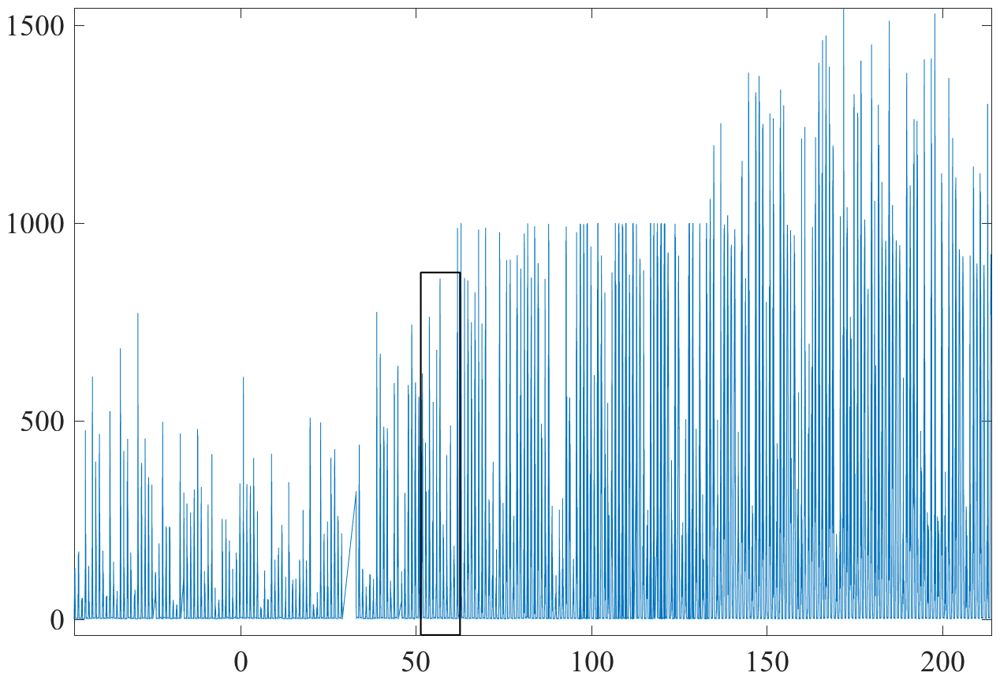 --- class: center, .toc[[✧](../index.html)] #Third Example 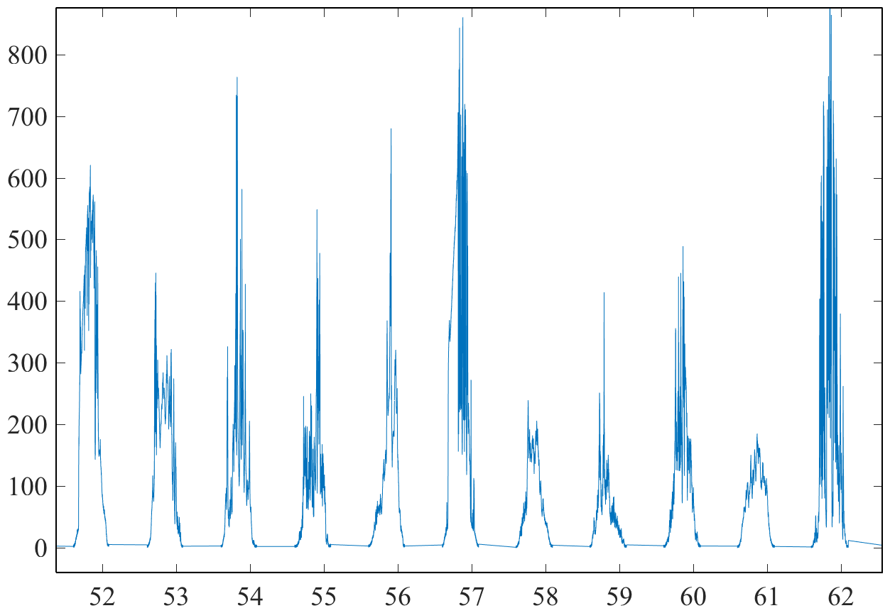 --- class: left, .toc[[✧](../index.html)] #Observable Features 1. The data appears to be composed of nonnegative spikes at regularly spaced intervals. 1. The amplitude of the spikes generally increases over time. 1. During the middle part of the record, the amplitude conspicuously appears to obtain a fixed maximum value. 1. A time period of linearly increasing values is apparent, suggesting a gap filled by interpolation. 1. Zooming in shows that the data is composed of alternating periods of roughly *zero* values, and periods of positive values. 1. These two periods are of roughly equal length. 1. The positive-value periods are roughly symmetric, increasing to a maximum value near their midpoint before decaying again. 1. High-frequency variability is seen within the positive regions. -- This is solar radiation data recorded from the roof of NWRA. We are seeing the diurnal cycle as well as the annual cycle. The uniform upper bound in the middle portion is suspicious and likely a data quality issue. The high-frequency variability is from passing clouds. --- class: center, .toc[[✧](../index.html)] #Fourth Example <img style="width:95%" src="../figures/solomon.png"> --- class: center, .toc[[✧](../index.html)] #Fourth Example 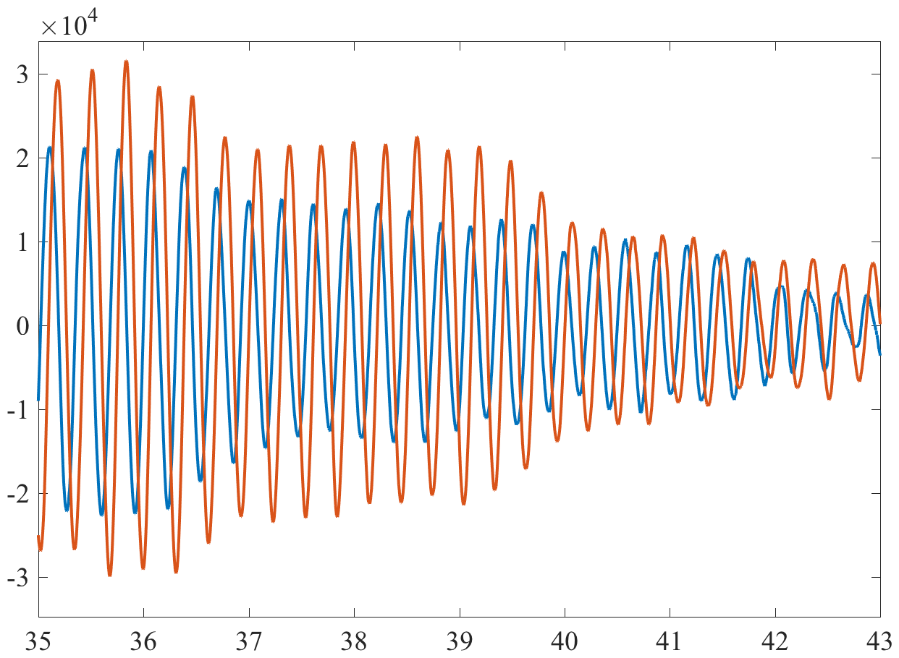 --- class: left, .toc[[✧](../index.html)] #Observable Features 1. A very small intrinsic noise level, as seen at the beginning. 1. A sudden wave arrival near the beginning of the record. 1. A much larger wave arrival in the middle of the record. 1. From the phasing of the large wave arrival, we can see that it is *elliptically polarized*, with an eccentricity that changes in time. The orbital motion is in the *counterclockwise* sense. 1. There is no sign of asymmetry in the orbital motion, neither peak-to-trough nor left-to-right. 1. The characters of the early and late waves are very different. The early wave appears *jagged* while the later wave appears smooth. Thus we appear to be seeing some kind of wave arrival, though the medium does not appear to be water. We need a medium that can support different types of waves. -- This is a seismograph. We are looking at the radial (away from source in the horizontal plane) and vertical components of acceleration. The major wave is called a Rayleigh wave. --- class: center, .toc[[✧](../index.html)] #Water vs. Rayleigh Wave 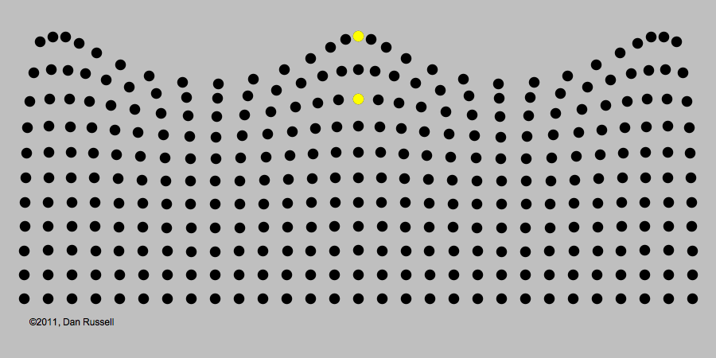 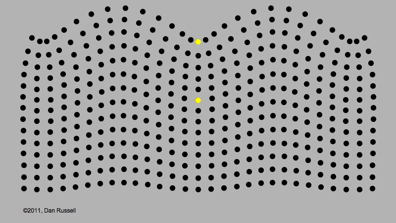 Thanks to [{Dan Russell}](http://www.acs.psu.edu/drussell/Demos/waves/wavemotion.html). --- class: center,middle .toc[[✧](../index.html)] #Fifth Example 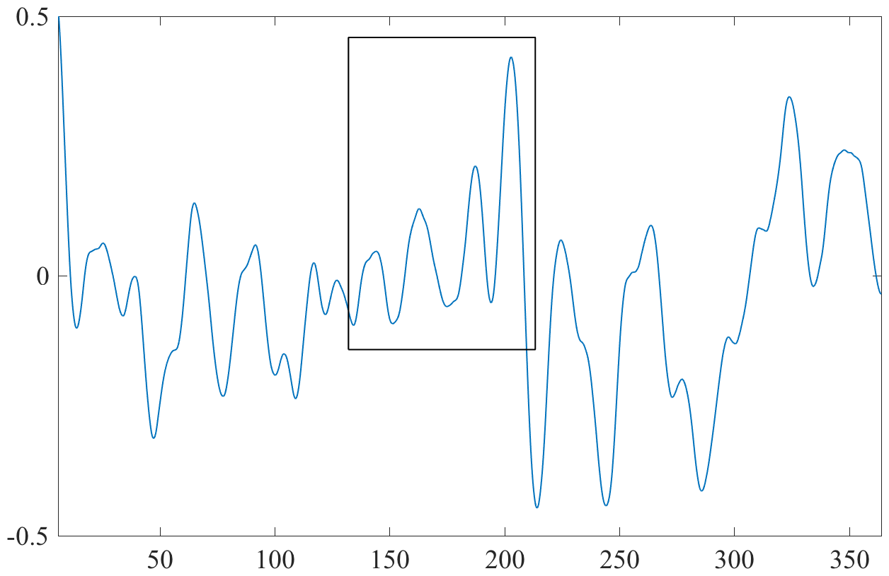 --- class: center,middle .toc[[✧](../index.html)] #Fifth Example 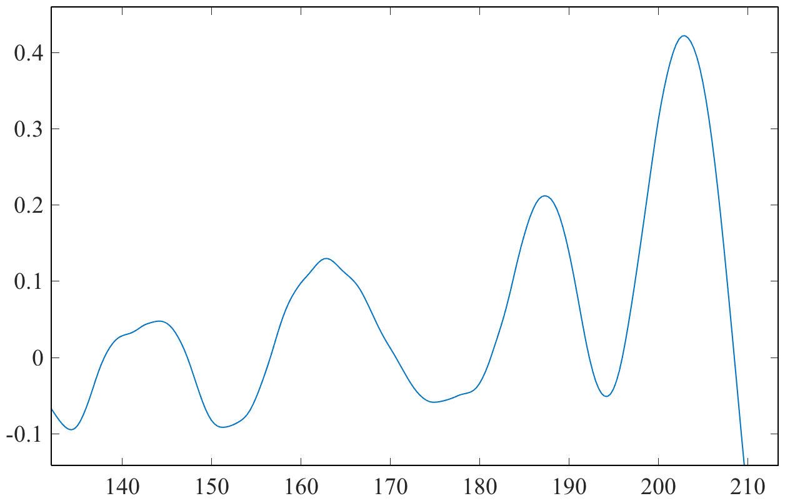 --- class: left, .toc[[✧](../index.html)] #Observable Features 1. This time series is smooth, suggesting it has been previously filtered. 1. The predominant variability is present is at a roughly 25—100 day time scale. 1. The amplitude of this variability is more or less uniform over the time interval. 1. An event near the center of the record appears to increase its amplitude as its frequency decreases. -- This is Gaussian white noise, filtered with a 50 day lowpass filter. Apparent structure is due to the interaction of randomness with the filter width. There is nothing phyical about it at all. --- class: center, .toc[[✧](../index.html)] #Sixth Example 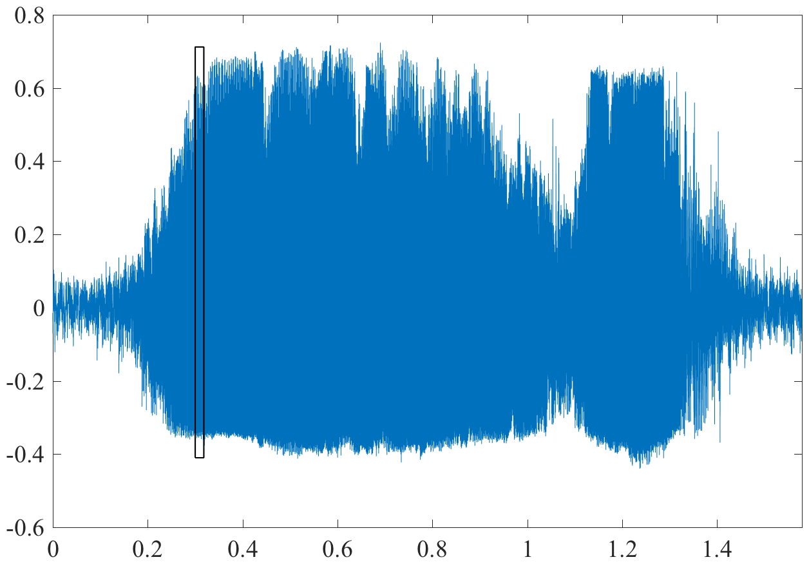 --- class: center, .toc[[✧](../index.html)] #Sixth Example 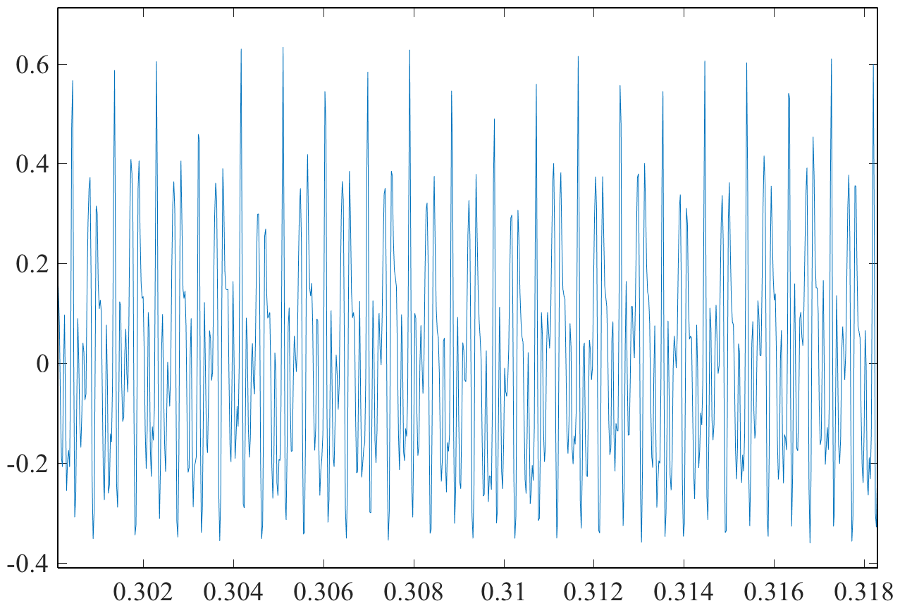 --- class: left .toc[[✧](../index.html)] #Observable Features 1. The time series has a very rough appearance. 1. The amplitude of this roughness varies as a function of time. 1. The signal is highly asymmetric, with larger positive amplitudes than negative amplitudes. 1. Amplitude “notches” appear in the positive side, but less so on the negative side. 1. Zooming in, we see the signal roughness is actually composed of *repeated patterns* that are highly non-sinusoidal. Repeated patterns such as these can be generated by adding up sinusoids having frequencies that are integer multiples of a common frequency, that is, harmonics. This suggests the signal is some kind of vocalization or musical tone. -- Sometimes it's helpful to use your ears! <audio controls> <source src="../videos/callS1.wav" type="audio/wav"> </audio> -- This is an orca call, courtesy of [Beam Reach](http://www.beamreach.org/), Seattle. --- class: center, .toc[[✧](../index.html)] #Seventh Example 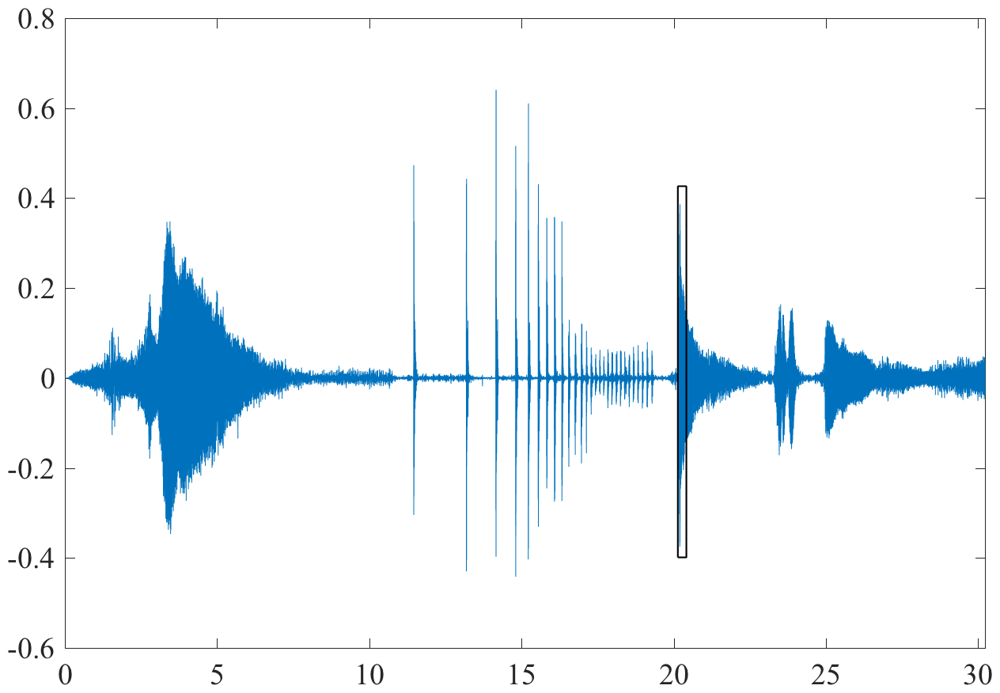 --- class: center, .toc[[✧](../index.html)] #Seventh Example 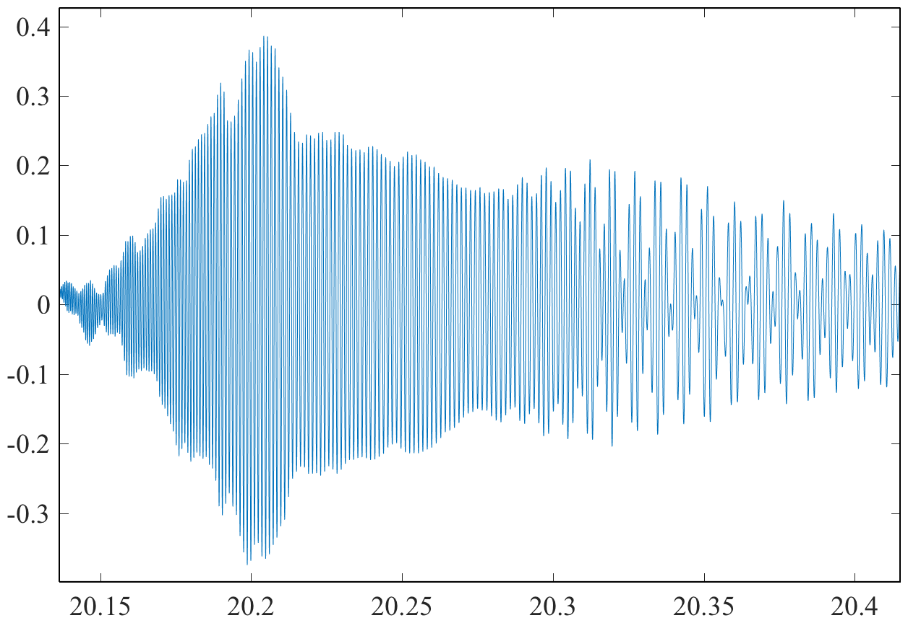 --- class: left .toc[[✧](../index.html)] #Observable Features 1. The intrinsic noise level appears very low. 1. The time series has two very distinct types of features. 1. The first type has a very dense oscillatory structure, with amplitudes that typically rise rapidly and then fall more slowly. 1. The second type of feature is abrupt spikes. These are very narrow in time, with both an upward portion and a downward portion. These become closer together as time increases. 1. The time series is generally symmetric up/down, but highly asymmetric left/right. 1. Zooming in, we see that the highly oscillatory feature appears to have a frequency that *decreases* with time. This is a very strange signal. It has features that look like both the seismic signal and the orca vocalization. -- <audio controls> <source src="../videos/weddellseal.wav" type="audio/wav"> </audio> -- These are Weddell seal calls, courtesy of [WeddellSealScience](https://www.youtube.com/watch?v=XSUnb3ZompY). --- class: center, .toc[[✧](../index.html)] #Eighth Example 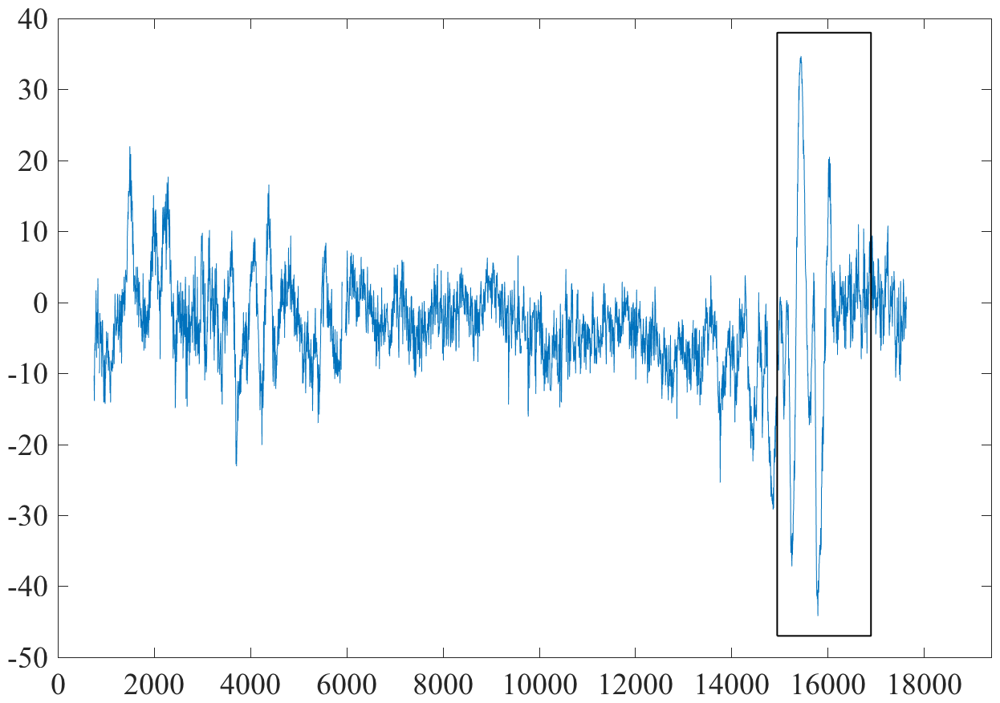 --- class: center, .toc[[✧](../index.html)] #Eighth Example 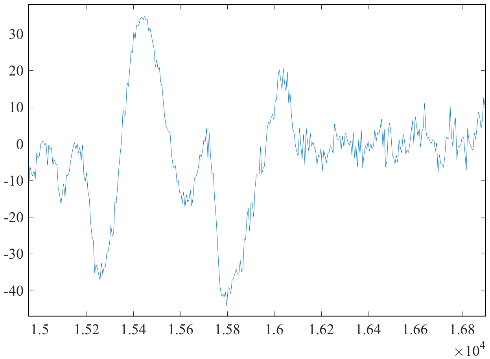 --- class: center, .toc[[✧](../index.html)] #Eighth Example 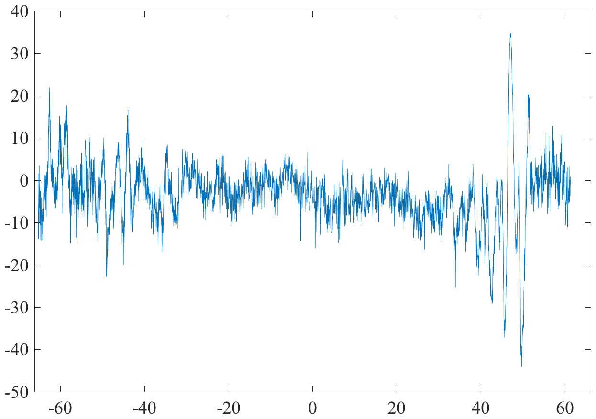 Does it help to see the `$x$`-axis? --- class: center, middle .toc[[✧](../index.html)] <video preload="auto" width="100%" height="auto" data-setup="{}" controls><source src="../videos/longtrack.mp4" type="video/mp4" /></video> This is more of the same type of data. --- class: left .toc[[✧](../index.html)] #Observable Features 1. The intrinsic noise level appears relatively large compared to the signal, and appears uniformly distributed over all `$x$`-locations. 1. The scales of variability vary as a function of the `$x$`-axis location. Relatively small `$x$`-scales can be seen for `$|x|\gt 55$`, intermediate scales in the range `$35 \lt |x|\lt 55$`, and broad scales for `$|x|\approx 0$`. 1. The largest amplitude variabilty coincides with the band of intermediate scales in the range `$35 \lt |x|\lt 55$`. While there is variability in the vicinity of `$x=0$`, the surrounding band `$|x|\lt 20$` is relatively featureless. 1. Large positive excursions appear to be favored over large negative excursions. 1. The pattern is not entirely symmetric in `$x$`, as variability in the range `$35 \le |x|\lt 55$` is typically larger for `$x \gt 0$` than for `$x\lt 0$`. 1. In the animation, coherence or persistence of features through several frames is observed. 1. A periodic excursion of missing data is seen on the left-hand side, extending to `$x\approx -55$`, but not on the right-hand side. --- class: center, .toc[[✧](../index.html)] 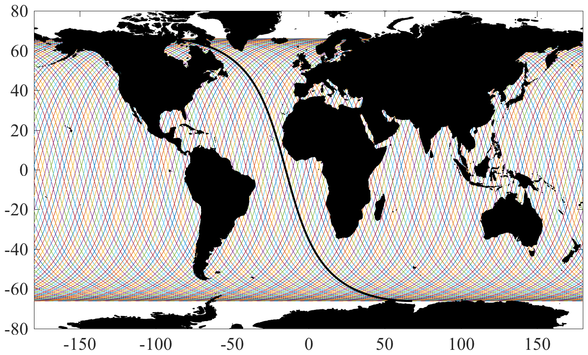 This is Topex/Poseidon/Jason altimetry observed along a single long track, the track highlighted in black, plotted versus latitude. Each animation frame is about 10 days apart. --- class: center, .toc[[✧](../index.html)] #Ninth Example 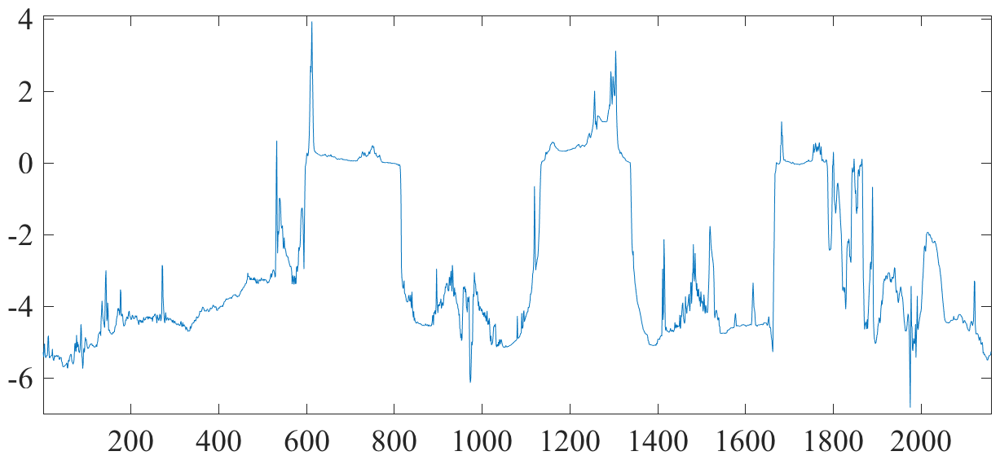 --- class: center, .toc[[✧](../index.html)] #Ninth Example <video preload="auto" width="90%" height="auto" data-setup="{}" controls><source src="../videos/topomovie.mp4" type="video/mp4" /></video> This is more data of the same type. The previous image appears about halfway through. --- class: center, .toc[[✧](../index.html)] #Ninth Example <img style="width:100%" src="../figures/toposlicelon.png"> Does it help to see the `$x$`-axis? -- The units of the `$y$`-axis are kilometers. -- The units of the `$x$`-axis are degrees. --- name: howtolookatdata class: center,middle, .toc[[✧](../index.html)] 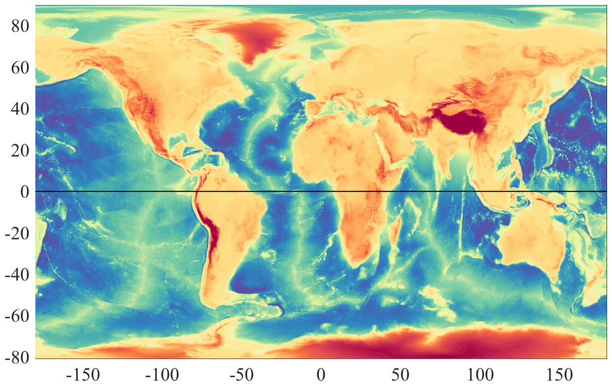 This is the Earth's topography, sliced along lines of latitude. The animation proceeds from the south to the north. --- class: left, .toc[[✧](../index.html)] # How to Look at Data Let the data speak for itself. -- Exercise your powers of observation. How many different features can you see? -- Exercise your imagination. What are possible explanations for these different features? -- Consider noise and artifacts. Be aware that features may be spurious, misleading in appearance. -- Don't be satisfied with a single interpretation. If you can come up with one interpretation, what is an alternate? -- Don't take sides. Don't settle on a single fixed interpretation. Try to hold different points of view at the same time. -- Don't turn to other tools until you have really looked thoroughly. --- class: left, .toc[[✧](../index.html)] # Some Questions <!--Here are some questions you can ask just using your eyes.--> What is the overall variability of the time series like? Is it smooth, or rough? Does it change with time? Does variability appear organized at a particular scale or set of scales? Is there “noise”? Are there excursions? If so, are these symmetric up/down? Are they symmetric front-to-back? Are they uniformly distributed in time? Are there periodic features? If so, would these be characterized as oscillations? Does the period appear to change in time? Does the oscillation appear regular, like a sinusoid? Are the peaks and valleys symmetric up/down and front-to-back? Does the sample interval appear sufficient to resolve the variability? Does the duration appear sufficient? Are there obvious periods of missing data, outliers, or other suspicious features? Where do these tend to occur? --- class: left, .toc[[✧](../index.html)] #Speed Science! In this assignment, we first count off into ones and twos. The ones bring up a zoomable image of their dataset, and stay put. The twos circulate throughout the room. You have five minutes to introduce yourselves, and for the twos to tell the ones what they see in their data. Note!! It is the person to whom the data does *not* belong who is doing most of the talking! The ones are mostly there to answer questions. Then the bell rings, and all of the twos rotate one position. Sound good? Have fun! <!-- class: left, .toc[[✧](../index.html)] #Homework All homework should be done in a Live Script, as discussed in this afternoon's lab. Preparing your data: 1. Remove any obvious bad values. 1. If your dataset is not regularly spaced, interpolate it to be so. 1. If your dataset has missing data attend to these through simple linear interpolation; try the <tt>jLab</tt> routine <tt>fillbad</tt>. Then: 1. Please review the notes. 1. Look at your data using the above idea. 1. Note as many observable features as you can. 1. Comment these in your Live Script. Also do the homework at the end of the [Data Analysis Startup Lab](DataAnalysisStartupDemo.html). If you don't have a mooring dataset you can use [{this one}](../data/mooring.mat).--> <!-- Examine <tt>mooringdemo</tt>, and based on this template, create a demo file that will run using <tt>“echodemo”</tt> to plot your data. You will add to this later-->